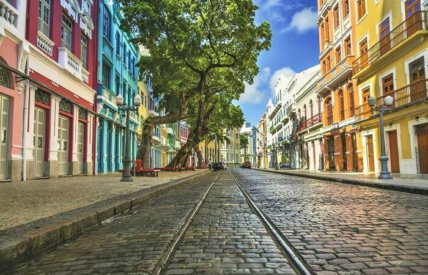
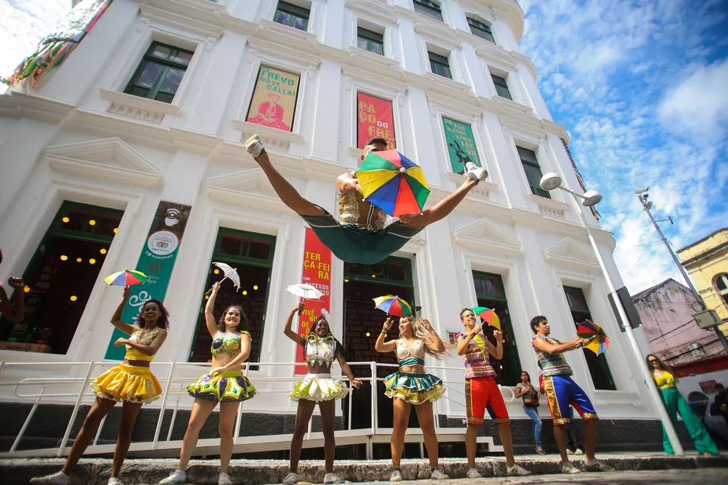

Além do Marco Zero
O bairro do Recife Antigo é repleto de cores e história. Aqui estão mais dois lugares imperdíveis:
Rua do Bom Jesus

Eleita uma das ruas mais bonitas do mundo, abriga a Sinagoga Kahal Zur Israel.
Paço do Frevo

Um espaço dedicado à salvaguarda do frevo, ritmo que é Patrimônio da Humanidade.